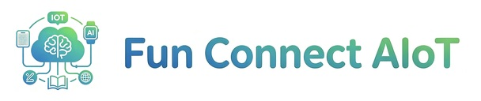

Selected web work
Website Projects
Two company website projects, collected in one place and presented with permission.

FunConnect AIoT
AIoT and multidisciplinary STEM learning for schools.
Open website →TechConnect SME
AI-assisted financial document workflows for small businesses.
Open website →